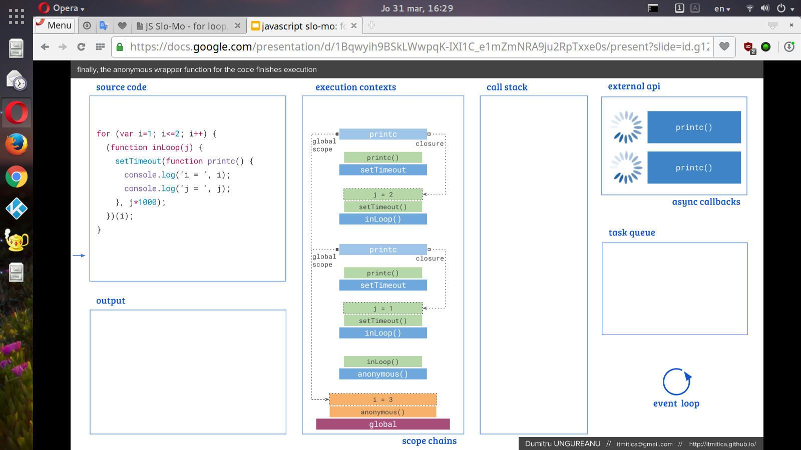

JS Slo-Mo
for-loop, closures, async callbacks
Scopes & Closures
JavaScript has global scope and local scope. A closure is a preserved execution context for a local scope. No closures can be formed for the execution context of the global scope.
Let's take a look at the script below.
i variable is not a closure candidate. i variable is in the global scope: the declaration part is hoisted to the top of the global scope, while the assignment part stays in place.
j variable is a closure candidate. j variable is a local variable for the inLoop function. In fact, printc callback function is forming two closures on the j variable.
Vars & Boomerangs, Vars & Sticks, Vars & Embassies
All functions, inLoop, setTimeout, printc, outLoop, could boomerang for the i value all the way through to the global scope and back.
But for a function like outLoop, a boomerang for j value would not work. As far as the inLoop function is concerned, outLoop function can only throw sticks at its local scope: none will loop back.
What outLoop needs is an embassy grounds inside the local scope of the inLoop function, the same way setTimeout function is the embassy grounds for the printc function inside the local scope of the inLoop function.
Loops & Functions
Let's take a look at the script below.
Except for the missing outLoop function, the code is almost identical, the inLoop function as an IIFE is not changing many things here.
Normally, having functions expressions inside loops is not recomended. Because closures are not understood properly, the coder may wish the code would work a cetain way, only to find out that it doesn't. Case in point, i is only producing the value of 3 for the printc callback function.
Understanding closures is a case of picturing how the scopes and the execution contexts are chained. Based on the snipet above, the presentation is taking a slo-mo approach for the execution stages.
Links and screenshots
Google Docs "JS Slo-Mo" Presentation
